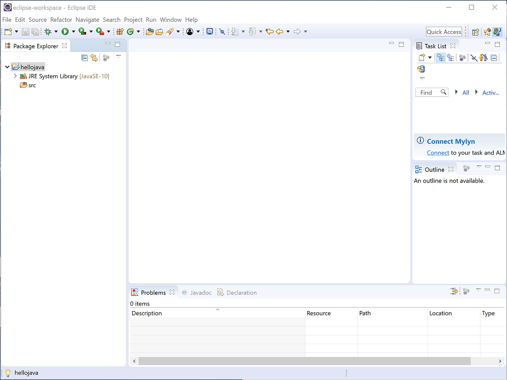
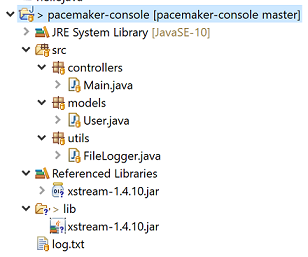

Objectives
The objective of this lab is to install and configure your development workstation and to bring into focus some of the terms and concepts covered in the opening lecture.
Install JDK
The first step is to locate the Java Software Development Kit in this Oracle web site:
On this page, download the latest release of JDK, version 10 and save to your local disk.
Make sure to select the correct one for your operating system.
Once it is downloaded, locate the file on your hard disk (it may be on your desktop) and run it.
During the installation process it will install two subsystems
- JRE
- JDK
Keep an eye on where these are installed, as both are important.
Verify JDK
Open a Command Prompt in Window - or a terminal - on your workstation.
Enter the following command:
java -versionthis will verify that java is installed correctly, and will display the version number:
C:\Users\Siobhan>java -version
java version "10.0.2" 2018-07-17
Java(TM) SE Runtime Environment 18.3 (build 10.0.2+13)
Java HotSpot(TM) 64-Bit Server VM 18.3 (build 10.0.2+13, mixed mode)
C:\Users\Siobhan>It might look slightly difference depending on your system. However, we are looking for 10.x.x version.
Install Eclipse
Eclipse is a free, open source, Integrated Development Environment for Java. We will use it during the labs as the main environment for writing, testing and exploring Java programs.
Visit the Eclipse web site:
Select the 'Eclipse IDE for Java EE Developers' version.
On Windows, the install is merely a matter of extracting the arhive somethere, locating the Eclipse application binary, and launching it. On a Mac/Linux the installation may vary slightly.
Once installed and launched, it should look like this:
Verify Eclipse
We will create a very simple "Hello World" application to test the installation. Eclipse is currently displaying what is called the "Welcome" screen. We can remove this and reveal the standard workbench by pressing the "close" button on the welcome screen:

Note: it is advisable to switch to the "Java Perspective", if it is not displayed automatically for you.
HelloWorld
We will now create our first Java Application. We do this by first creating a Java project, selecting File->New->Java Project.
Call the project HelloJava:
... and press Finish:
When this dialog box appears, click on the Don't Create button (more on this later in the course):
This has created a project called HelloJava:

We can explore this project in the "Package Explorer" window:
Currently the project is empty. We can add a new class to the project as follows: Select the src node in the HelloJava project and right click (to bring up the context menu):
Select Class, which will bring up the New Java Class dialog::
Call the class Hello as shown above. Also, make sure to select the public static void main check box is checked:

Press finish - and the class hello.java will be generated:
Inside the opening and closing braces of the main() method, enter the following:
System.out.println("Hello Everyone!");So that the full class looks like this:
We can now proceed to execute the program. We should expect it to print the message indicated on the console.
To execute, right click on Hello.java in the Package Explorer:
Select Run As->Java Application as shown above. The application will execute. The output is visible in the Console view along the end of the perspective:
Finally, note that eclipse is a folding editor. This means we can remove from view selected elements if we wish to have an uncluttered high level view of the source. Hover the cursor over the main method:

... the press the mouse once, and the method will fold:

Pressing it again will expand ....
Data Structure
Create a new project called pacemaker-console. Do this by selecting 'File->New->Java Project'. Fill out the New Java Project wizard as shown:
Press "Finish". When the Create Module wizard window appears, click the Don't Create button.
In the new project, select 'src', right click and select 'New->Package'. Call the package 'models' and press finish:
Selecting "models", select "File->New" and select "Class". Name the class "User":
Edit the User.java source - and replace the current contents with the following:
package models;
public class User
{
public String firstName;
public String lastName;
public String email;
public String password;
public User()
{
}
public User(String firstName, String lastName, String email, String password)
{
this.firstName = firstName;
this.lastName = lastName;
this.email = email;
this.password = password;
}
}In a new package called 'controllers', create a class called "Main" (follow same steps used to create User class above). Replace the contents of Main.java with the following
package controllers;
import java.util.ArrayList;
import java.util.List;
import models.User;
public class Main
{
public static void main(String[] args)
{
List<User> users = new ArrayList<User>();
users.add(new User("Bart", "Simpson", "bart@simpson.com", "secret"));
users.add(new User("Homer", "Simpson", "bart@simpson.com", "secret"));
users.add(new User("Lisa", "Simpson", "bart@simpson.com", "secret"));
System.out.println(users);
}
}The workbench should now look as follows:
Launch the application as follows. Do this by selecting "Main.java" in the Package Explorer and select "Run->Run As->Java Application". This executes the application (running the main method) which in turn prints output to the console.
Debug
Now explore the "users" data structure in the debugger: Editing the Main.java source file, double click inside the scroll bar on first line of the main method:

This creates a breakpoint (visually a small blue bubble). Run the program again: - this time under the debugger. With the 'pacemaker-console' project open, select these options from the toolbar...Run-> Debug.
You may see the permissions dialog (allow access):

and also a switch perspective dialog (allow the switch):

Finally, the workspace will be reconfigured as follows:
Selecting 'Run->Step Over' from the eclipse menu several times will execute each line of the main method.

Note the editor view shows each line under execution. The Variables view shows the contacts data structure being populated.
Exploring the variable window should enable you to inspect each contact object as it is inserted. This variable window can also show a "Logical View" of the data structure (toggle the second button in the toolbar)
To terminate the application, press the button in the Console view and restore the "Java Perspective" (using buttons in top right hand corner):
... you should now be back in the familiar "Java Perspective":
If you are not familiar with debugging in eclipse, spend some time repeating the above steps. In particular, hover over the various tool bar buttons visible in the debug perspective to get an general understanding of how to control and explore a running application.
Git Version Control
Before moving on to the next step - we will commit this project to 'git' version control.
First, right click on the project and select 'Team->Share Project'

and then you will see this:
Tick the 'Use or create repository', and then press the 'Create Repository' button. Then press the 'Finish' button.
You may notice that your eclipse project icons look a little different.
Now, select the project again in Package Explorer, select 'Team' - and this time the menu will be different:
Select 'Commit' - and enter details as shown here:
Select all the 'unstaged' files
... and select 'add to index' from the context menu:
Press "Commit" - which will clear the staging panel:
Note how the icons above changed again in the package explorer.
Although we haven't saved this to any external server, we have preserved the applications current structure.
You may be more familiar with the git command line or another git visual client.
Pattern
Create a new package in the eclipse project, called 'utils' and introduce the following class into that package:
package utils;
import java.io.FileNotFoundException;
import java.io.FileWriter;
import java.io.IOException;
import java.io.PrintWriter;
public class FileLogger
{
private static FileLogger logger;
private FileLogger()
{
}
public static FileLogger getLogger()
{
if (logger == null)
{
logger = new FileLogger();
}
return logger;
}
public boolean log(String msg)
{
try
{
PrintWriter writer = new PrintWriter(new FileWriter("log.txt", true));
writer.println(msg);
writer.close();
}
catch (FileNotFoundException ex)
{
return (false);
}
catch (IOException ex)
{
return (false);
}
return (true);
}
}Project workspace should be structured as follows:

Edit the Main.java, replacing the main method with the following:
public static void main(String[] args)
{
FileLogger logger = FileLogger.getLogger();
logger.log("Creating user list");
List<User> users = new ArrayList<User>();
users.add(new User("Bart", "Simpson", "bart@simpson.com", "secret"));
users.add(new User("Homer", "Simpson", "bart@simpson.com", "secret"));
users.add(new User("Lisa", "Simpson", "bart@simpson.com", "secret"));
System.out.println(users);
logger.log("Finished - shutting down");
}Note that there will be one error - the FileLogger class is being used in the Main method without being imported. Hovering over the error in the editor will pop-up some autocorrect suggestions:
If you select the first one shown (Import FileLogger) then the appropriate import will be inserted into the class and the error will disappear:
import utils.FileLogger;Execute the program. Do this be selecting main.java in the package explorer, and selecting menu "Run->Run As->Java Application" as before.
The console should list data structure as before, and a log file "log.txt" should be generated. As the file is just generated, it will not be visible in the workspace. To view it, select the 'pacemaker-console' project in the package explorer, and select "File->Refresh". Package explorer will be updated to reflect the new file generated in the workspace:
Double click log.txt to view the log:

Before we finish this step, we can 'commit' changes we have just made. In Package Explorer, select the project, right click and select 'Team->Commit':
Fill out as shown below i.e. add the new source files to the index, provide a relevant message and commit.
Notice the changes in the package explorer icons:
Component
Download the following XStream jar file:
In Eclipse Package Explorer, create a new folder "lib". Do this be selecting the project, select "File->New->Folder". In the offered dialog, enter "lib" as the file name. Drag the xstream.jar file already downloaded into the lib folder. Your eclipse workspace should now look like this:
Right click on the 'xstream' component and select "Build Path->Add to Build Path". Your workspace should now look like this:

Replace the main method (not the entire class Main) with this version here:
public static void main(String[] args) throws IOException
{
FileLogger logger = FileLogger.getLogger();
logger.log("Creating user list");
List<User> users = new ArrayList<User>();
users.add(new User("Bart", "Simpson", "bart@simpson.com", "secret"));
users.add(new User("Homer", "Simpson", "bart@simpson.com", "secret"));
users.add(new User("Lisa", "Simpson", "bart@simpson.com", "secret"));
System.out.println(users);
logger.log("Serializing contacts to XML");
XStream xstream = new XStream(new DomDriver());
ObjectOutputStream out = xstream.createObjectOutputStream(new FileWriter("users.xml"));
out.writeObject(users);
out.close();
logger.log("Finished - shutting down");
}Use the autocorrect feature to correct the package import errors. If used appropriately, the following import statements should be added to the class (note: existing imports are listed below too):
import java.io.FileWriter;
import java.io.IOException;
import java.io.ObjectOutputStream;
import java.util.ArrayList;
import java.util.List;
import com.thoughtworks.xstream.XStream;
import com.thoughtworks.xstream.io.xml.DomDriver;
import models.User;
import utils.FileLogger;Run the program (use steps as before). You may be asked to choose the Java application. Choose Main - Controllers and click the OK button:
Eliminating a warning message
As we are using Java10, you should get the following warning message:
Note that the component works as it is supposed to; the warning message is due to the differing reflective approaches adopted between Java8 and Java10. The component hasn't been updated for Java10 yet.
We can get rid of the warning by passing suppression messages to the VM when we run our application. To do this, right click on the project. From the context menu, select 'Run As' followed by 'Run Configurations'. The following window should appear:
Click on the 'Arguments' tab and enter the following VM arguments:
--add-opens java.base/java.util=ALL-UNNAMED
--add-opens java.base/java.lang.reflect=ALL-UNNAMED
--add-opens java.base/java.text=ALL-UNNAMED
--add-opens java.desktop/java.awt.font=ALL-UNNAMEDClose the dialog window by pressing the Run button. Note how the warning message is now suppressed.
Interrogating the new file
A file called "users.xml" will have been generated. Using the refresh step from before (or just press the F5 key when the focus is in the package explorer) to make this file visible in package explorer. Then open the file.
Two views should be visible. A "Design" view:

and a "Source" view

We have used a component (xstream) to convert an internal data structure into an XML stream, which we have written to a file on our harddisk.
See if you can commit the changes we have just made to git.
Exercises
Lab Archive
You can find the solution to the previous steps on this github repo (along with a separate solution to these exercises):
Data Structures
The Data Structure example - step 4 - used the ArrayList data structure. For an elegant introduction to this, and the collections framework as a whole, take a look at this trial here:
In particular, the ArrayList is discussed here:
See if you can modify the code to use LinkedList instead of ArrayList. What would be the benefits?
Components
For many uses, XML has largely been replaced with JSON:
Which offers some considerable benefits as a simple representation of data structures. The XML library you used in Step 8 also supports JSON.
There are only two small changes required to output JSON - which are contained in the first code fragment. The existing xtream jar file will not be sufficient for it to run (although it will compile successfully). Following the instructions for incorporating a jar file in step 8, see if you can import these two libraries here:
If these are part of the build path, then the xstream component should be able to generate json versions of the data structure.
Frameworks
Rich Client applications are somewhat out of fashion these days, however there is a substantial collection of open source Eclipse RCP applications here:
This one here is worth a look: